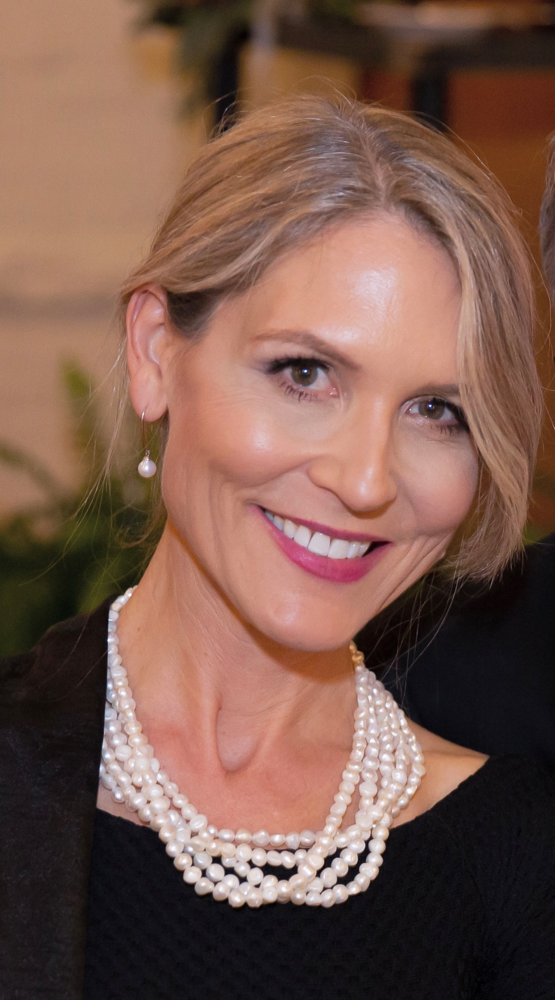

Three decades of medicine, a parallel life in writing and broadcasting, and the family that made it all possible.

Lisa Belisle is a board-certified family physician and preventive medicine specialist whose clinical work integrates Western medicine with acupuncture, Five Phase theory, mindfulness-based stress reduction, qigong, and herbalism. Across more than three decades of practice, she has understood health as something that unfolds within relationships, rhythms, and time.
Lisa’s career has never moved in a single direction. Alongside clinical practice, she has served in medical executive and advisory roles within health systems, founded and led her own practice, directed digital health initiatives, and taught in residency and medical education for more than a decade. Simultaneously, she built a parallel career in media, working as a wellness editor and editor in chief for a regional publication.
Lisa is the host of Radio Maine, a video podcast exploring creativity and the human spirit. She co-hosts A Healthy Conversation with Dr. Jeffrey Barkin on Newsradio WGAN. She publishes The Bountiful Path, a twice-weekly Substack newsletter at the intersection of medicine, art, and seasonal wisdom.
Lisa is a collaborator with The Portland Art Gallery in Portland, Maine, where the Radio Maine Live panel series and the Artful Escapes conversation series take place.
Lisa holds a PhD in Community Leadership from the University of Central Arkansas. She is working on a memoir, Daughter, Doctor, Mom, centered on her relationship with her late father, Charles Belisle, MD, a family physician who practiced for nearly fifty years at Maine Medical Center’s Family Medicine Residency Program. She and her husband have six children between them. They live on Littlejohn Island, off the coast of Maine.